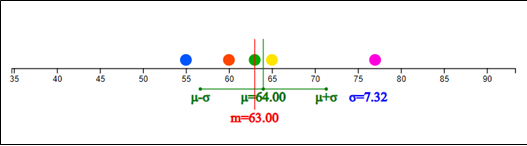

In the case of quantitative data, the central tendency and dispersion of
the data are measured and analyzed.
- Central tendency : mean / median
- Dispersion : variance / standard deviation
Data for two quantitative variables are measured using a covariance and
a correlation coefficient.
4.1 Measure of Central Tendency – Mean and Median
⭐ Think
The data obtained by taking a sample of 5 middle school students and surveying their weight are as follows:
(Data 4.1) Weights of five middle school students (kg)
63 60 65 55 77
üíé Explore
1) What kind of graph is used to find a representative value of these data?
2) What would be a representative value for the weight of 5 students?
The average (or mean) is a measure of central tendency of quantitative
data and is widely used as a representative value for the data. The mean is
the sum of all data and divided by the number of data, which implies the
center of gravity of the data. The mean is expressed as \(\mu\) (read mu),
and the mean of (Data 4.1) is obtained as follows:
$$
\text{Mean} = \mu = \frac{63 + 60 + 65 + 55 + 77}{5} = \frac{320}{5} = 64
$$
When \(n\) number of data is expressed as \(x_1 , x_2 , ... , x_n \),
mean is expressed by the following formula.
$$
\small \mu = \frac{1}{n} \sum_{i=1}^n x_i
$$
In general, the mean is very appropriate as a representative value of the data,
but when there is a very large or a small value in the data, it is greatly
affected by this extreme value. In this case, a median can be used.
The median is the value in the middle when the data are sorted in order.
In (Data 4.1), the number of data is 5 which is an odd number, and the 3rd
(\(\frac{n+1}{2}\)) number when data is sorted in ascending order is the median as follows:
Data 4.1) is sorted in ascending order.
\(\qquad\)55 60 63 65 77
Median is the 3rd number in these sorted data which is 63.
If the number of data is 6 which is an even number, how do we find the median?
In this case, the median of the data is calculated as the average of the
3rd (=\(\frac{n}{2}\) ) and 4th (=\(\frac{n+2}{2}\) ) of the sorted data.
Generally, a median is expressed as \(m\), and, if the number of data is \(n\) ,
it is calculated as follows:
1) Data are sorted in ascending order.
2) Check whether the number of data is an odd number or an even number.
3) If \(n\) is odd, \(m\) = \( (\frac{n+1}{2})^{th}\) data in sorted data.
\(\quad \;\)If \(n\) is even, \(m\) = Average of (\(\frac{n}{2})^{th}\) data \((\frac{n+2}{2})^{th}\) data in sorted data.
In order to see the overall distribution of the weight data, a stem and leaf plot
or a histogram discussed in Chapter 3 can be considered, but a dot graph is more useful.
In a dot graph, after obtaining the minimum and maximum values of data, the position of
each data is calculated on the horizontal axis, and displayed as a dot.
<Figure 4.1> is a dot graph for (Data 4.1). In proportion to the minimum
value of 55 and the maximum value of 76, each data is displayed by a dot.
The green line is the mean and the red line is the median. In this data,
the mean is located slightly to the right of the median because 77 of the data
is located to the right of the other four data. That is, the mean is more sensitive
to an extreme than the median.

<Figure 4.1> Dot graph of weight data
If there are lots of data, it is time-consuming and difficult to obtain the mean
and median manually as above. Let's find the representative value of the data
using 『eStatM』 software.
üé≤ Practice 4.1
Using 『eStatM』, draw a dot graph for the weights of 5 students (Data 4.1) and find the mean and median.
Solution
Enter students' weight data in 'Data input'. (You can also copy and paste
the data from the e-book)
When data are entered, the number of data, minimum, maximum, mean, and median are calculated
immediately. If you click the [Execute] button, a dot graph appears as shown in
<Figure 4.1> and the mean and median values are displayed.
<Figure 4.3> Simulation window to see a change in mean and median if you move a point
Bottom graph of <Figure 4.3> is a simulation window.
In this simulation window, you can move a point with the mouse to see the changes in the
mean and median. For example, if you drag the rightmost point and move it to the right,
the mean changes but the median does not. That is, the median is not affected by the extreme points.
üé≤ Practice 4.2
Using 『eStatM』, let's find the mean and median of the daily minimum temperature
([Practice 3.2]) in Seoul in February (Data 3.2).
(Data 3.2) Daily minimum temperature in February 2021 in Seoul (unit: degree in Celcius)
If you select ‘Dot Graph – Mean/Standard Deviation’ from the 『eStatM』 menu
using the QR on the left, the data input window as shown in
<Figure 4.4> appears.
<Figure 4.4> Temperature data input for a dot graph
When the daily minimum temperature data are entered in 'Data input' (you can copy
and paste the data from the e-book), as shown in <Figure 4.4>,
it shows immediately that the number of data is 28, mean –1.79, median –1.90,
minimum -10.6, maximum 6.4 degrees.
If you click the [Execute] button, a dot graph as shown in <Figure 4.5>
appears and the mean (\(\mu\)) and median (\(\m\)) are displayed. Below this
dot graph, a simulation window appears where you can change a point with the mouse and observe the changes in the mean a
<Figure 4.5> Dot graph of daily minimum temperature and its simulation window
Looking at this dot graph, it can be seen that there is almost no difference
between the mean and the median due to the absence of extreme value.
⏱ Exercise 4.1
The following is data on the length of bicycle-only roads by 25 administrative
districts in Seoul as of 2019 ([Exercise 3.1]). Use 『eStatM』 to draw a dot graph,
and to find and analyze the representative values of data.
(Data 3.3) Length of bicycle-only roads by 25 administrative districts in Seoul as of 2019 (unit: km)
The following is data on the maximum wind speed of typhoons that passed
through Korea in 2020 ([Exercise 3.2]). Use 『eStatM』 to draw a dot graph,
and to find and analyze the representative values of data.
(Data 3.4) Maximum wind speed of typhoons that passed through Korea in 2020 (unit: m/sec)
Assume that a frequency table of the academic achievement test scores of
a middle school class is given as follows:
[Table 4.1] Frequency table of the academic achievement test scores of a middle school
Class
Number of data
60≤ ~ <70
2
70 ~ 80
5
80 ~ 90
10
90 ~ 100
3
Total
20
üíé Explore
How do we find the mean using this frequency table?
When a frequency table is given rather than the raw data, the mean can be obtained
approximately as follows using the middle values of each class interval.
First, find the middle value of each class interval. Then, it is assumed that
each class has the middle value as many as the frequency, and the mean is obtained
using this approximated data.
[Table 4.2] Approximated data using the middle value of each class interval in the academic achievement test scores
Using ‘Frequency Distribution Polygon - Relative Frequency Comparison’ of 『eStatM』,
the approximate mean of the frequency table can be obtained as shown in
<Figure 4.6>. After entering the left value of the class interval and
‘Frequency 1’, click the [Execute] button.
<Figure 4.6> Mean calculation using a frequency table
4.2 Measure of Dispersion – Standard Deviation
⭐ Think
The quiz scores (out of 10) of five middle school students are as follows:
(Data 4.2) The quiz scores (out of 10) of five middle school students
6 8 7 4 10
üíé Explore
Is there a way to measure how scattered these data are?
The degree to which data are scattered is called a dispersion. A simple measure
of the dispersion is a range which is the maximum minus the minimum.
$$
\text{Range} = \text{Maximum - Minimum}
$$
In (Data 4.2), the maximum value is 10 and the minimum value is 4, so the range is 22.
$$
\text{Range} = \text{77 - 55 = 22}
$$
Since the range is too sensitive to extreme values, a variance or a standard deviation
is generally used to measure the dispersion. The variance is obtained by
squaring the distance between each data value and the mean, and dividing it by
the number of data. Therefore, when the data are scattered far from the mean,
the variance is large, and when the data are clustered around the mean,
the variance is small. The variance is expressed as \(\sigma^2\) (read as sigma squared).
The mean of the data in (Data 4.2) is as follows:
$$
\text{Mean} \quad \mu ~=~ \frac{6+8+7++4+10}{5} ~=~ \frac{35}{5} ~=~ 7
$$
The variance is calculated by squaring the distances from the mean to each data
value to find the sum, and then finding the mean. That is, it is the average of
squared distances.
$$
\begin{align}
\text{Variance} \quad \sigma^{2} &~=~ \frac{ (6-7)^2 + (8-7)^2 + (7-7)^2 + (4-7)^2 + (10-7)^2} {5} \\
&~=~ \frac{20}{5} ~=~ 4
\end{align}
$$
When \(n\) number of data is expressed as \(x_1 , x_2 , ... , x_n\) and the mean
is expressed as \(\mu\), the variance can be expressed by the following formula.
$$
\begin{align}
\text{Variance} \quad \sigma^{2} ~=~ { {1 \over n} {\sum _{i=1} ^{n} (x_{i} - \mu )^{2}} } ~~~~ (n:~자료수) \\
\end{align}
$$
The standard deviation is defined as the square root of the variance
and denoted by \(\sigma\). The variance is not easy to interpret practically
because it is the average of the squared distances, but the standard deviation
is the square root of the variance, so it can be interpreted as a measure
of the average distance between each data value and the mean.
$$
\text{Standard deviation} \quad \sigma ~=~ \sqrt{\sigma^2} \\
$$
The standard deviation of (Data 4.2) is \(\sigma\) = \(\sqrt{\sigma^2}\) = \(\sqrt{4}\) = 2 이다.
üé≤ Practice 4.3
Using 『eStatM』, draw a dot graph for the quiz scores of 5 sample students (Data 4.2) and find the mean and standard deviation.
Solution
Select ‘Dot Graph – Mean / Standard Deviation’
from the 『eStatM』 menu. Then a window like <Figure 4.7> appears.
Enter students' quiz scores in 'Data input'. (You can also copy and
paste the material from the e-book)
When the data are entered, the number of data, minimum, maximum, mean, median,
variance and standard deviation are calculated. If you click the [Execute] button,
a dot graph as shown in <Figure 4.8> appears and the mean, median,
standard deviation, and a line of mean \(\pm\) standard deviation are displayed.
Using the simulation window below the figure, you can check the change
in the standard deviation by moving a data point with the mouse.
The standard deviation is also affected by an extreme point.
<Figure 4.8> Dot graph with a line of mean \(\pm\) standard deviation
üé≤ Practice 4.4
Using 『eStatM』, let's draw a dot graph for the daily minimum temperature ([Practice 3.2]) in Seoul in February (Data 3.2) and find the mean and standard deviation.
Solution
If you select ‘Dot Graph – Mean / Standard Deviation’ from the 『eStatM』 menu
that appears using the QR on the left, the data input window as shown in
<Figure 4.9> appears.
<Figure 4.9> Temperature data input for a dot graph
When data are entered, the number of data, minimum, maximum, mean, median, variance
and standard deviation are calculated. If you click the [Execute] button, a dot graph
as shown in <Figure 4.10> appears and the mean, median, standard deviation,
and a line of mean \(\pm\) standard deviation are displayed.
Using the simulation window below the figure, you can check the change in the
standard deviation by moving a point with the mouse. The standard deviation
is also affected by an extreme point.
<Figure 4.10> Dot graph of daily minimum temperature and a simulation window
⏱ Exercise 4.3
The following is data on the length of bicycle-only roads by 25 administrative districts in Seoul as of 2019 ([Exercise 3.1]). Use 『eStatM』 to draw a dot graph and to find and analyze the mean and standard deviation of the data.
(Data 3.3) Length of bicycle-only roads by 25 administrative districts in Seoul as of 2019. (unit km)
The following is data on the maximum wind speed of typhoons that passed through Korea in 2020 ([Exercise 3.2]). Use 『eStatM』 to draw a dot graph and find and analyze the mean and standard deviation of data.
(Data 3.4) Maximum wind speed of typhoons that passed through Korea in 2020 (unit m/sec)
A. Calculation of standard deviation using frequency table
⭐ Think
Assume that the frequency table of the academic achievement test scores of a middle school class is given as follows:
[Table 4.3] Frequency table of the academic achievement test scores of a middle school
Class
Number of data
60≤ ~ <70
2
70 ~ 80
10
80 ~ 90
15
90 ~ 100
3
Total
30
üíé Explore
How to find the standard deviation of the data in this frequency table?
In the previous section, when a frequency table was given rather than the raw data,
the mean was approximated using the middle value of each class interval.
The standard deviation is calculated in a similar way.
First, find the middle value of each class. Then, it is assumed that each class
has the middle value as many as the frequency, and the average is obtained
using this approximate data.
[Table 4.4] Approximated data using the middle value of each class interval in the academic achievement test scores
Weight (kg)
Middle value
Frequency
Approximated data
60≤ ~ <70
65
3
65 65
70 ~ 80
75
7
75 75 75 75 75
80 ~ 90
85
11
85 85 85 85 85 85 85 85 85 85
90 ~ 100
95
5
95 95 95
Total
30
Mean is calculated as follows:
$$
\text{Mean} ~=~ \frac{65 \times 2 + 75 \times 5 + 85 \times 10 + 95 \times 3} {20} ~=~ \frac{1640}{20} ~=~ 82
$$
The variance and standard deviation are calculated in a similar way.
$$ \small
\begin{align}
&\text{Variance} \qquad \qquad \sigma^2 ~=~ \frac{(65-82)^2 \times 2 + (75-82)^2 \times 5 + (85-82)^2 \times 10 + (95-82)^2 \times 3} {20} \\
&\qquad\qquad\qquad\qquad \;\; ~=~ \frac{1420}{20} ~=~ 71 \\
&\text{Standard deviation} \qquad \sigma ~=~ \sqrt{\sigma^2} ~=~ \sqrt{71} ~=~ 8.43
\end{align}
$$
Using ‘Frequency Distribution Polygon - Relative Frequency Comparison’ of 『eStatM』,
the approximate mean and standard deviation of the frequency table can be obtained
as shown in <Figure 4.6>. After entering the left value of the class interval
and ‘Frequency 1’, click the [Execute] button.
<Figure 4.11> Standard deviation calculation using a frequency table
4.3 Covariance and Correlation Coefficient
⭐ Think
The height and weight of 7 male middle school students were investigated as follows:
(Data 4.3) Height and weight of 7 male middle school students
1
2
3
4
5
6
7
Height
162
164
170
158
175
168
172
Weight
54
60
64
52
65
60
67
üíé Explore
Is there a measure to determine the correlation between two quantitative variables?
Just as the variance is used as a measure of dispersion in one quantitative variable,
the following covariance is used in two quantitative variables. When \(n\) number
of x and y data are expressed as \( (x_1 , y_1 ), (x_2 , y_2 ), ... , (x_n , y_n ) \),
and the mean is expressed as \( (\mu_x , \mu_y )\), the covariance
\(\sigma_{xy}\) can be expressed by the following formula.
$$
\text{Covariance} \quad \sigma_{xy} ~ =~ \frac{1}{n} \sum _{i=1} ^{n} (x_{i} - \mu_x ) (y_{i} - u_y ) \qquad (n:\text{ number of data} )
$$
Covariance implies the total average of the values obtained by multiplying the
x-axis distance and the y-axis distance between each data point and the mean point
of data. Therefore, if there are many points on the upper right and lower left of
the mean point, the covariance has a positive value, indicating a positive correlation.
If there are many points on the upper left and lower right of the mean point,
the covariance has a negative value, indicating a negative correlation. However,
since covariance can increase in value depending on the unit of data, the following
correlation coefficient denoted as \(\rho\) is used as a measure of correlation.
$$
\text{Correlation coefficient} \quad \rho ~ =~ \frac{\sigma_{xy}}{\sigma_x \sigma_y}
$$
The correlation coefficient is a variation of the covariance and can only have
values between -1 and +1. When the correlation coefficient is close to +1,
the two variables are said to have a strong positive correlation, and when the
correlation coefficient is close to -1, it is said to have a strong negative correlation.
When the correlation coefficient is close to 0, there is no correlation between
the two variables.
üé≤ Practice 4.5
Using 『eStatM』, calculate the covariance and correlation coefficient of the height and weight of 7 students. .
Solution
Enter students' height in 'Enter X data' and their weight in 'Enter Y data'.
(You can also copy and paste the material from the e-book)
After the data input, click the [Execute] button. Then the number of data, mean,
variance, standard deviation, covariance and correlation coefficient are calculated
as in <Figue 4.12> and a scatter plot is displayed.
As shown in <Figure 4.12>, the covariance of height and weight in (Data 4.3)
is 27 and the correlation coefficient is 0.94, indicating a strong positive correlation.
<Figure 4.13> Scatter plot using height and weight data
If you check the ‘regression line’ under the scatterplot, a regression line that
explains the relationship between height and weight is drawn.
If the correlation is strong, a straight line that can explain the relationship
between the variables is obtained, which is called a regression line.
A detailed explanation of the regression line is covered in university level of statistics.
üé≤ Practice 4.6
Using 『eStatM』, make a point on the plane and observe the correlation coefficient and regression line while moving.
Solution
If you decide a correlation coeffcient in 『eStatM』, a scatter plot of the correlation coefficient
appears as shown in <Figure 4.15>.
<Figure 4.15> Simulation of a correlation coefficient